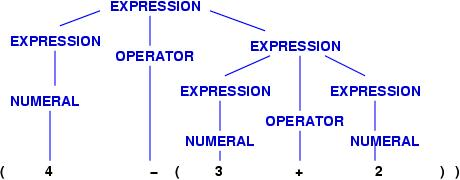
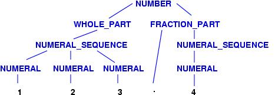
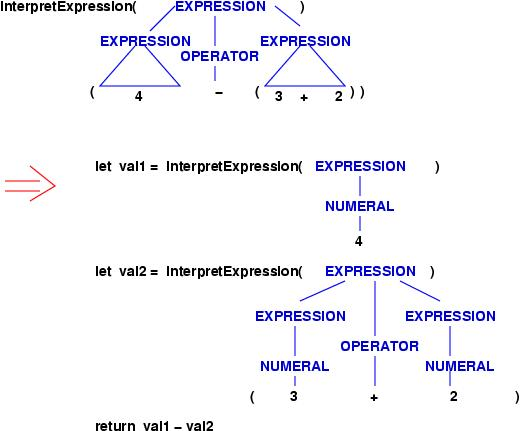
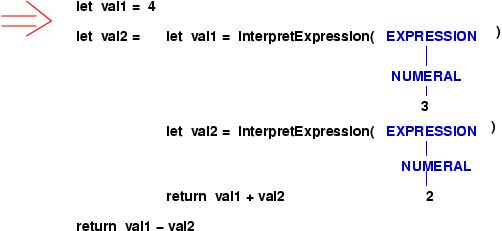
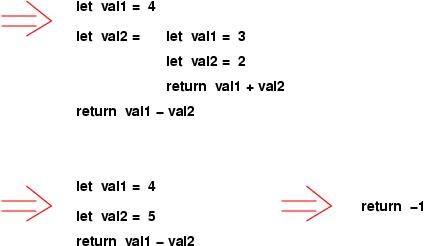

The same ideas are just as important when you talk to a computer, by means of a program written in a programming language. For the computer to understand what you say, the computer must have knowledge of the language you use. This includes:
In the 1950s, Noam Chomsky realized that the syntax of a sentence (or computer program) can be represented as a tree, and the rules for building syntactically correct sentences can be written as an inductive definition. Chomsky called the inductive definition a grammar. (John Backus and Peter Naur independently discovered the same notation, and for this reason, a grammar is sometimes called BNF (Backus-Naur form) notation.)
Grammars are best introduced by example. Say that we wish to define precisely how to write an arithmetic expression. We might say that such expressions consist of numerals composed with addition and subtraction operators. But we should be more precise. Here are three laws (``rules'' or ``equations'') that define arithmetic expressions; they define a grammar for arithmetic:
EXPRESSION ::= NUMERAL | ( EXPRESSION OPERATOR EXPRESSION ) NUMERAL ::= 0 | 1 | 2 | 3 | 4 | 5 | 6 | 7 | 8 | 9 OPERATORS ::= + | -The words in upper-case letters name phrase forms and word forms. Thus, the first rule defines how to write EXPRESSION phrases: an EXPRESSION phrase consists of either a NUMERAL word or a left bracket followed by another (smaller) EXPRESSION phrase followed by an OPERATOR word followed by another (smaller) EXPRESSION phrase followed by a right bracket. (The vertical bar means ``or.'')
The rule for NUMERAL tells us that a numeral word is built in ten different ways, and the third rule, for OPERATOR, defines the two words that are legal operators.
Using the rules, we can verify that this sequence of words is a legal EXPRESSION phrase:
( 4 - ( 3 + 2 ) )There is a precise formal justification:
Indeed, a sequence of words is an EXPRESSION phrase if and only if one can build a tree for the words using the grammar rules. Such a tree is called the phrase's parse tree.
It is easy to see that the three rules of the grammar define three inductive definitions, which work together to generate EXPRESSION trees. Here they are:
An EXPRESSION phrase is either
An OPERATOR phrase is either
Finally, a NUMERAL phrase is one of
A fractional number has as a whole-number part followed by an optional fraction part. Both whole-number and fraction parts consist of nonempty sequences of numerals; the fraction part is preceded by a decimal point. Here are the grammar rules:
NUMBER ::= WHOLE_PART FRACTION_PART? WHOLE_PART ::= NUMERAL_SEQUENCE FRACTION_PART ::= . NUMERAL_SEQUENCE NUMERAL_SEQUENCE ::= NUMERAL NUMERAL* NUMERAL ::= 0 | 1 | 2 | 3 | 4 | 5 | 6 | 7 | 8 | 9The first rule tells us that a NUMBER phrase consists of a WHOLE_PART followed by a FRACTION_PART; the question mark states that the FRACTION_PART is optional. The second and third rules have obvious readings; note the decimal point in the third rule.
The asterisk in the fourth rule stands for ``zero or more''---a NUMERAL_SEQUENCE consists of one NUMERAL followed by zero or more additional NUMERALs. As before, the vertical bars in the last rule are read as ``or.''
For example, 123.4 is a NUMBER because 123, the WHOLE_PART, is a NUMERAL_SEQUENCE and because .4 is a FRACTION_PART, where 4 is a NUMERAL_SEQUENCE. Here is its tree:
The example shows that * and ? are useful shorthands for specifying tree structure.
For conciseness, the first three grammar rules can be compressed into just one:
NUMBER ::= NUMERAL_SEQUENCE [[ . NUMERAL_SEQUENCE ]]?The double-bracket pairs, [[ and ]], enclose a phrase; because of the question mark suffixed to it, the entire phrase is optional. We also use double brackets to enclose phrases that can be repeated zero or more times, e.g.,
NUMBER_LIST ::= NUMBER [[ , NUMBER ]]*This rule defines the syntax of a list of numbers separated by commas, e.g., 1, 2.34, 56.7 is a NUMBER_LIST as is merely 89.
Double brackets can be used to enclose alternatives, e.g., this grammar rule defines exactly the two words, ``cat'' and ``cut'':
WORDS ::= c [[ a | u ]] t
As the examples show, spaces within the grammar rules do not imply that spaces are required within the phrases defined by the rules. For example, we normally write a NUMBER, like 56.7, with no internal spaces.
PROGRAM ::= { STATEMENT_LIST }
STATEMENT_LIST ::= [[ STATEMENT ; ]]*
STATEMENT :: = DATA_TYPE IDENTIFIER
| IDENTIFIER = EXPRESSSION
| println IDENTIFIER
| while EXPRESSION { STATEMENT_LIST }
DATA_TYPE ::= int | boolean
EXPRESSION ::= IDENTIFIER | NUMERAL | ( EXPRESSION OPERATOR EXPRESSION )
The first rule states that a program is a list of statements surrounded
by brackets,
and the second rule shows that each statement is terminated by a semicolon.
The third rule defines the language's four statement forms
(a variable declaration, an assignment, a print statement, and a loop).
The last two rules define the data type names and the expression phrases.
Here are the rules for words:
IDENTIFIER ::= LETTER [[ LETTER ]]* NUMERAL ::= DIGIT [[ DIGIT ]]* OPERATOR ::= + | == LETTER ::= A | B | C | ... | Z NUMERAL ::= 0 | 1 | ... | 9Identifiers are one or more letters, and numerals are one or more digits. There are just two operators, addition and equality comparison.
For simplicity, we assume that a mini-Java program separates all words by one or more blanks or newlines. Here is an example mini-Java program:
{ int A ;
A = 5 ;
while ( A == 5 ) { int B ; B = 6 ; A = ( B + A ) ;
println A ; } ;
boolean C ; println C ;
}
As an exercise, you should draw the parse tree for this program.
When the Java compiler processes a Java program, it first builds the program's parse tree. Then, it must calculate the meaning --- the semantics --- of the parse tree. The process of giving meaning can be done with a tree-traversal algorithm. We now study how this is done.
Recall this small grammar for EXPRESSION phrases:
EXPRESSION ::= NUMERAL | ( EXPRESSION OPERATOR EXPRESSION ) NUMERAL ::= 0 | 1 | 2 | 3 | 4 | 5 | 6 | 7 | 8 | 9 OPERATORS ::= + | -and this parse tree:
What is this tree's meaning? There are two possible answers:
loadconst 4 loadconst 3 loadconst 2 add subtractwhich, when executed by the Java Virtual Machine, computes an interpretive meaning.
Since EXPRESSIONs are defined inductively, their interpretive meaning is defined by this recursive schema:
interpretExpression( NUMERAL ) = return NUMERAL
interpretExpression( EXPRESSION1 OPERATOR EXPRESSION2 ) =
let val1 = interpretExpression( EXPRESSION1 )
let val2 = interpretExpression( EXPRESSION2 )
if OPERATOR == "+" then return (val1 + val2)
if OPERATOR == "-" then return (val1 - val2)
Here is the interpretive meaning of the expression, drawn pictorially.
The tree is decomposed into its two subtrees, and
the function is applied to the subtrees:
The first subtree's meaning is just 4. The second subtree must be decomposed:
Now, the meanings are assembled:

Here is the above interpretive meaning summarized in a linear notation, where we show just the leaves of the parse tree:
interpretExpression( ( 4 - ( 3 + 2 ) ) )
=>
let val1 = interpretExpression( 4 )
let val2 = interpretExpression( ( 3 + 2 ) )
return val11 - val2
=>
let val1 = return 4
let val2 = ( let val1 = interpretExpression( 3 )
let val2 = interpretExpression( 2 )
return val1 + val2
)
return val11 - val2
=>
let val1 = 4
let val2 = ( return 3 + 2 )
return val11 - val2
=>
return 4 - 5 = -1
An expression's translation meaning is defined so that the answer computed is a string of byte-code instructions:
translateExpression( NUMERAL ) = return "pushconst " + NUMERAL + " \n "
translateExpression( EXPRESSION1 OPERATOR EXPRESSION2 ) =
return translateExpression( EXPRESSION1 )
+ translateExpression( EXPRESSION2 )
+ translateOperator( OPERATOR )
translateOperator( "+" ) = "add \n "
translateOperator( "-" ) = "subtract \n "
Here is the translation meaning of the example expression:
translateExpression( ( 4 - ( 3 + 2 ) ) )
=> translateExpression( 4 )
+ translateExpression( ( 3 + 2 ) )
+ translateOperator( "-" )
=> "pushconst 4 \n "
+ translateExpression( ( 3 + 2 ) )
+ translateOperator( "-" )
=> "pushconst 4 \n "
+ translateExpression( 3 ) + translateExpression( 2 ) + translateOperator( "+" )
+ "subtract \n "
=> "pushconst 4 \n "
+ "pushconst 3 \n "
+ "pushconst 2 \n "
+ "add \n "
+ "subtract \n "
=> "pushconst 4 \n pushconst 3 \n pushconst 2 \n add \n subtract \n "
The next lecture develops in detail a compiler and a Java Virtual Machine for mini-Java.